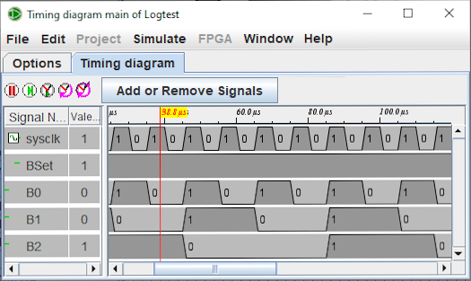

Chronogram
Subsections:
Chronogram window
Signal selection
Options
To understand or debug a circuit it is often very useful to be able to observe the different signals in a visual way. This is the purpose of the timeline. This module allows the recording of signals in graphical form or in a table of value in a text file.

You can enter the logging module via the menu | Simulate |→| Chronogram |. It brings up the signal selection window.
The circuit below is an illustrative example for the timing module.

This circuit consists of a count3 counter and an and gate. It is driven by three inputs: clk0, Bset and BReset.
Next: The Selection tab.